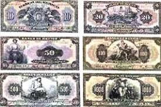
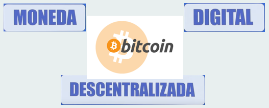
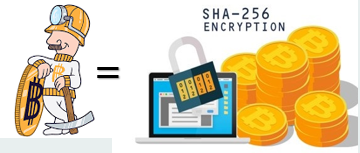
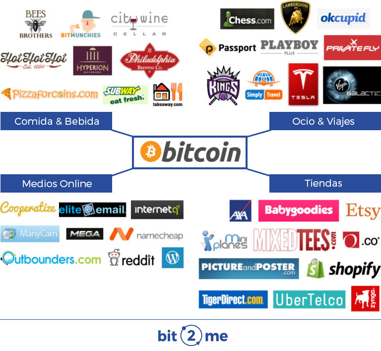

Otros temas
Bitcoin
Los griegos fueron los primeros en estampar la cara de sus reyes en las monedas, surgen los imperios de Grecia y China.Se fabrican las primeras monedas
El dinero de papel apareció, cómo no, en China en el siglo VII, aunque no se instauró su uso oficial hasta el año 812, mas ligero y trasladar de un lugar a otro
img src="img/bitcoin.png" width="350" height="200"/>
SIGLO XXI
Inicia como un proyecto en 2009
Grupo de informáticos Satoshi Nakamoto
La revista Newsweek publica en el 2014 que posiblemente sea Leah Goodman
La búsqueda termina y dan con Craig Wrright. Pero no es creíble
Se hace la transacción de BTC a Dólar
2010 se realiza la primera compra en BTC
Se detecta vulneración

Cuál es la idea del bitcoin?
Nadie que actualice las cuentas en nombre de los demás
Razones: Muy Cotoso, Gobierno imprime billetes

¿Cómo?
Eliminar Gobierno y Bancos,Balances - cadena de bloques
Mineros
La minería en Bitcoin es el proceso de realizar cálculos matemáticos mediante computadoras para confirmar las transacciones en la red Bitcoin e incrementar la seguridad.

Donde Puedo Comprar?

Instancias en México que regulan el e-commerse
México si se encuentra regulado en materia de comercio electrónico, las empresas de todos los giros y los pequeños comercios deben conocer, saber la función y estar en contacto permanente con las siguientes dependencias de gobiern
¿Quiénes son los que regulan el e-comerse en México?
Las siguientes instituciones son las que regulan el e-commerce en México, Secretaría de Economía, Secretaría de Hacienda y Crédito Público, IFT, INEGI, BANCOMEXT, PROFECO y Asociación de Internet.
Secretaria de Economía.
Qué es la secretaria de economía? La Secretaría de Economía es un organismo público que se encarga de promover políticas públicas destinadas a fomentar la actividad económica, a crear empleo, y a fomentar la actividad de empresarios y emprendedores.
Qué funciones realiza? Formular, conducir, regular y controlar las políticas generales. Establecer la política de precios, y con el auxilio y participación de las autoridades locales. Regular, orientar y estimular las medidas de protección al consumidor. Norma y registrar la propiedad industrial y mercantil. Establecer y vigilar las normas de calidad, pesas y medidas necesarias. Estudiar y determinar mediante reglas generales, conforme a los montos globales establecidos por la Secretaría de Hacienda y Crédito Público, los estímulos fiscales necesarios para el fomento industrial para la actividad comercial.
Creación de consultorías para estrategias de marketing digital. Desarrollos de tiendas virtuales con pagos en línea (apoyo de plataformas bancarias). Servicios para contenidos en redes sociales. Difusión de empresas para impulsar el desarrollo de la economía por vías digitales.
Secretaria de Hacienda y Crédito Publico
¿Qué es la Secretaria de Hacienda y Crédito Publico? Es la dependencia federal encargada de proponer, dirigir y controlar la política económica del gobierno en materia financiera, fiscal, de gasto, de ingreso y deuda pública, así como de estadísticas, geografía e información, con el propósito de consolidar a México como un país con crecimiento económico de calidad, equitativo, incluyente y sostenido.
Qué funciones realiza?
Realizar o autorizar uso del crédito público
Cobrar los impuestos
Manejar la deuda pública de la Federación
Proyectar y calcular los egresos del Gobierno Federal
Planear, coordinar, evaluar y vigilar el sistema bancario
Proyectar y calcular los ingresos de la Federación, y el Departamento del Distrito Federal
Determinar los estímulos fiscales
Organizar y dirigir los servicios aduaneros y de inspección
Controlar el presupuesto de los servicios personales
El SHCP y el e-commerce Regulacion de e-commerce en México. Crear programas para el fomento del e-commerce en México. Evitan que las transacciones dudosas se incrementen. Control sobre lo que se puede adquirir por este medio.Instituto Federal de Telecomunicaciones
¿Qué es el IFT?
El Instituto Federal de Telecomunicaciones es un órgano autónomo.
Su objetivo primordial es el desarrollo eficiente de la radiodifusión y las Telecomunicaciones en México con apego a lo establecido en la Constitución.
Para lograrlo deberá regular, promover y supervisar el uso, aprovechamiento y explotación de:
El Espectro Radioeléctrico.
Las redes.
La prestación de los servicios públicos de radiodifusión y telecomunicaciones.
Así mismo, es responsable de garantizar el acceso equitativo a infraestructura y otros insumos esenciales para las tecnologías de la información y comunicación, así como a los servicios de radiodifusión y telecomunicaciones, incluidos banda ancha e internet.
¿Qué funciones realiza? Promover el desarrollo eficiente de la radiodifusión y las telecomunicaciones en el país, llevando a cabo tareas de competencia, regulación, promoción y supervisión de la explotación del espectro radioeléctrico, las redes, y la prestación de los servicios de radiodifusión y telecomunicaciones.
Instituto Nacional de Estadística, Geografía e Informática
¿Qué es el INEGI? El inegi Es el Instituto Nacional de Estadistica, Geografia e Informatica y es la dependencia que se encarga de llevar a cabo los censos de poblacion y de empresas
¿Funciones del INEGI? Es responsable de coordinar las actividades de otras dependencias del gobierno federal o de las entidades federativas que generan información estadística y geográfica, incluidas las del propio Instituto, de tal manera que se puedan reunir esfuerzos para formar una infraestructura de datos de México en el Sistema Nacional de Información Estadística y Geográfica.
Medicion de la economía por comercio digital. Muestra de datos comparativos del e-commerce en México con respecto a años pasados. Desarrollo continuo de planes para establecer estrategias de mercado en e-commerce. Presentación de datos, beneficios y problemas.
Banco Nacional de Comercio Exterior
¿Qué es Bancomext?
Banco Nacional de Comercio Exterior S.N.C. (Bancomext) tiene por objeto contribuir al desarrollo y generación de empleo en México, por medio del financiamiento al comercio exterior mexicano. Bancomext se fundó en 1937 y opera mediante el otorgamiento de créditos y garantías, de forma directa o mediante la banca comercial y los intermediarios financieros no bancarios, a fin de que las empresas mexicanas aumenten su productividad y competitividad.
Se desarrollan nuevas estrategias para el e-commerce y planes para su desarrollo. Campañas para fomentar el e-commerce con el apoyo de internet.
Procuraduría Federal de Consumidor.
¿Qué es la Profeco? La Procuraduría Federal del Consumidor, es un organismo que tiene como misión “promover y proteger los derechos del consumidor, fomentar el consumo inteligente y procurar la equidad y seguridad jurídica en las relaciones entre proveedores y consumidores”. Desde hace mucho hemos visto (los mexicanos) los programas de la profeco en la televisión o la ya conocida “Revista del consumidor”.
¿Qué funciones realiza la Profeco?
Proteger y defender los derechos de las y los consumidores.
Generar una cultura de consumo responsable.
Proporcionar información oportuna y objetiva para la toma de decisiones de consumo.
Implementar métodos de atención pronta y accesible a la diversidad de consumidoras y consumidores mediante el uso de tecnologías de la información.
Asociación de Internet
Qué es la Asociación de internet? Asociación líder en materia de internet en México, que desde 1999 ha fomentado el uso responsable y productivo de internet por parte de organizaciones, empresas, instituciones y usuarios. Realiza estudios y eventos anuales que permiten conocer más sobre las tendencias en línea y la percepción de los usuarios en temas fundamentales alrededor de internet.
Qué funciones realiza la Asociación de Internet?
Encuentro Estratégicos de Internet del cual han existido 5 ediciones y es catalogado como uno de los principales eventos de estrategia de Internet en el país.
Estudios sobre Internet en México además de un estudio de comercio electrónico.
Se han desarrollado cursos, diplomados y seminarios con temas relacionados con marketing en Internet en diferentes instituciones educativas.
Invitaciones a participantes de la industria para asistir a reuniones.
Participación activa con organizaciones para crear alianzas en Internet.
Proporciona material didáctico para beneficio de los usuarios.
La Asociación de Internet y el e-commerce.
Mapeo de rutas de comercio digital.
Diagnósticos de mercados.
Presentación de estudios de comercio electrónico.
Seminarios y convenciones sobre el mercado digital.